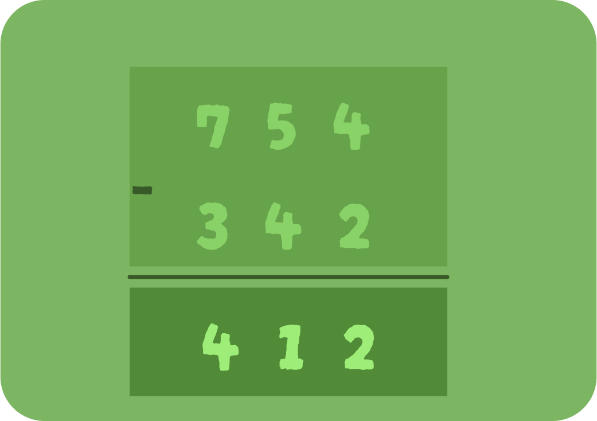
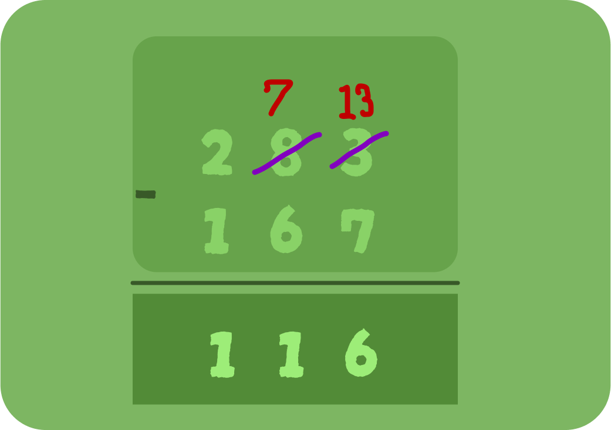

Subtracting 3 Digits
Stratigies to use in Dividing 3 Digits
1 - Digit Subtraction without Regrouping:
Once all the columns are subtracted, the final answer is obtained.
This is called subtraction without regrouping.
In such a case, there is no regrouping or borrowing of numbers because all the digits of the minuend are bigger in value than the subtrahend.
For example, let us subtract two numbers to understand this better. Let us subtract 342 from 754.
Let us understand 3-digit subtraction without regrouping using the following steps:
⦁ Step 1: Subtract the numbers under the ones column. 4 - 2 = 2. Write the difference (2) in ones column.
⦁ Step 2: Subtract the numbers under the tens column. 5 - 4 = 1 . Write the difference (1) in the tens column.
⦁ Step 3: Subtract the numbers under the hundreds column. 7 - 3 = 4. Write the difference (4) in the hundreds column. Hence, the difference between the given numbers is 412.

2 - Digit Subtraction With Regrouping:
Let us understand this three-digit subtraction with regrouping using the following steps:
⦁ Step 1: Write the given numbers according to their place values, one below the other in such a way that 283: is placed up and 167: is placed below it. They should be correctly placed under the columns of ones, tens, and hundreds.:
⦁ Step 2 :Start subtracting the numbers from the ones column. It can be seen that 3 is smaller than 7.: So, let us borrow 1: from the tens column which will make it 13.: This is known as borrowing or regrouping in subtraction.:
So, 13 - 7 = 6.: Now, we will write the difference (6) :under the ones column.
⦁ Step 3: After giving 1: to the ones column in the previous step, the '8': in the tens column changes to 7:. Now, let us subtract the digits at the tens place and write the difference under the tens column (7 - 6 = 1).:
⦁ Step 4: In the hundreds column, we will subtract 1 from 2 :and write the difference (1): in the column. (2 - 1 = 1). :Thus, after subtracting all the 3 digits, we get the difference as 116.:
